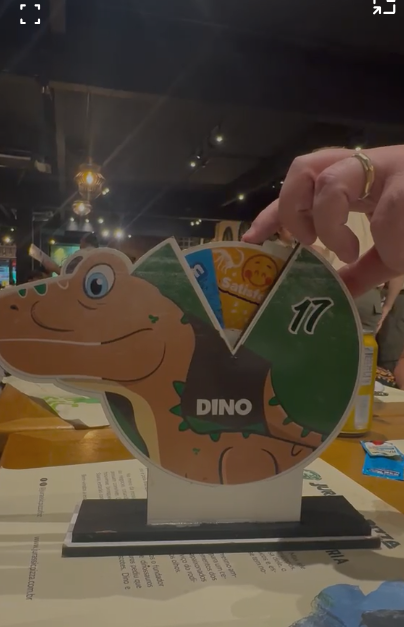

Briefing de design · Grupo ROB · atualizado em 18/11/2026
O que está em pauta agora, por prioridade. A meta é chegar em 20/12 com tudo fechado e entregue, inclusive o que vai pra gráfica pro começo do ano, pra todo mundo atravessar o recesso tranquilo.
A gráfica de Niterói que sempre usamos fica fechada de 20/12 a 10/01, e muitos fornecedores entram em recesso. Quem produz cada peça (freela ou IA/agente) e quem opera ainda vai ser combinado. Só o prazo do cartão de eventos está fechado.
Hoje o cliente não sabe quem é garçom e quem é cumim e é interrompido o tempo todo no rodízio. São peças simples que padronizam a experiência do salão da Øliver's. Também entram na loja nova da Região Oceânica.
Uma roleta por mesa, com ponteiro manual. É o próprio cliente que sinaliza, da mesa, o que quer receber.

* Entender desde já se faremos as caixas e se há tempo hábil com o fornecedor.
Réveillon com ingresso por pessoa e tudo incluído, com setores Ouro, Prata e Bronze. O teaser usa conteúdo do ano passado. As peças oficiais saem junto com a landing page, quando os valores estiverem fechados.
A loja de Piratininga foi reformada pra ser um restaurante familiar, com Área Kids, oliveiras e quadros nas paredes. Tudo que é impresso precisa estar dentro da loja até 04/01, dia em que começa o treinamento. Por isso as artes fecham em 20/12.
20 artes de quadro: 3 a 4 quadros grandes por parede ou área, totalizando cerca de 20 quadros. Universo da pizza, da marca e da Região Oceânica.
Os estáticos são os criativos que mais estão performando no tráfego do Grupo ROB. As próximas levas saem direcionadas pelos resultados, pelas últimas análises e pelos planos de ação.
Fechando toda a esteira acima até 20/12, a gente começa 2027 mais tranquilo e com uma base mais estável de criativos por marca.
A partir de janeiro, cada marca renova em média cerca de 10 estáticos por mês, entre carrossel, banner de canais pra campanhas e estático de tráfego. A conta não inclui os redimensionamentos pra cada canal.
Somando as 4 marcas, a média é de 40 peças por mês, sem contar as urgências (aquela arte que aparece de um dia pro outro). Em mês de lançamento, inauguração ou campanha grande, isso sobe.
Projetos fechados vão pra freelancer. Exemplo: o pack de impressos da inauguração de uma unidade. O freelancer faz todo o design daquele projeto.
| Marca | Estáticos/mês |
|---|---|
| Øliver's | 10 |
| Temakeria | 10 |
| Ogro Steaks | 10 |
| Grupo ROB | 10 |
| Urgências | à parte |
| Média mensal | 40 |
Sem contar os redimensionamentos por canal.
Cerca de 90 peças pontuais nesta esteira: prioridade 1, Natal, Réveillon (10 a 15 estáticos + kit da virada), Região Oceânica (20 quadros, 10+ estáticos e o kit impresso) e expansão (15 a 20 estáticos + panfletos).